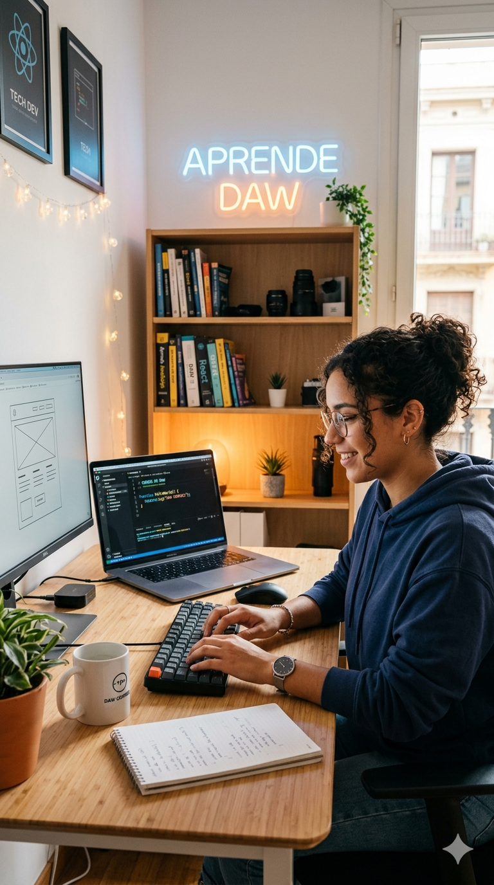

INFORMACIÓ
El Grau Superior en Desenvolupament d’Aplicacions Web (DAW) està orientat a estudiants interessats en la programació, el disseny web i les noves tecnologies. Aquest cicle forma professionals capaços de desenvolupar, implantar i mantenir aplicacions web modernes utilitzant eines i llenguatges actuals. L’alumnat aprendrà a crear pàgines i aplicacions interactives, gestionar bases de dades i treballar tant en la part visual com en la funcionalitat interna dels projectes web.
Què aprendrà el teu fill/a?
- Programació Web: Desenvoluparà pàgines i aplicacions web amb HTML, CSS, JavaScript i altres tecnologies modernes.
- Bases de Dades: Aprendrà a crear i gestionar bases de dades per emmagatzemar informació de manera segura i eficient.
- Desenvolupament Backend: Implementarà la lògica de les aplicacions i la connexió entre servidors i usuaris.
- Disseny i Publicació Web: Crearà interfícies atractives, responsives i adaptades a diferents dispositius.
